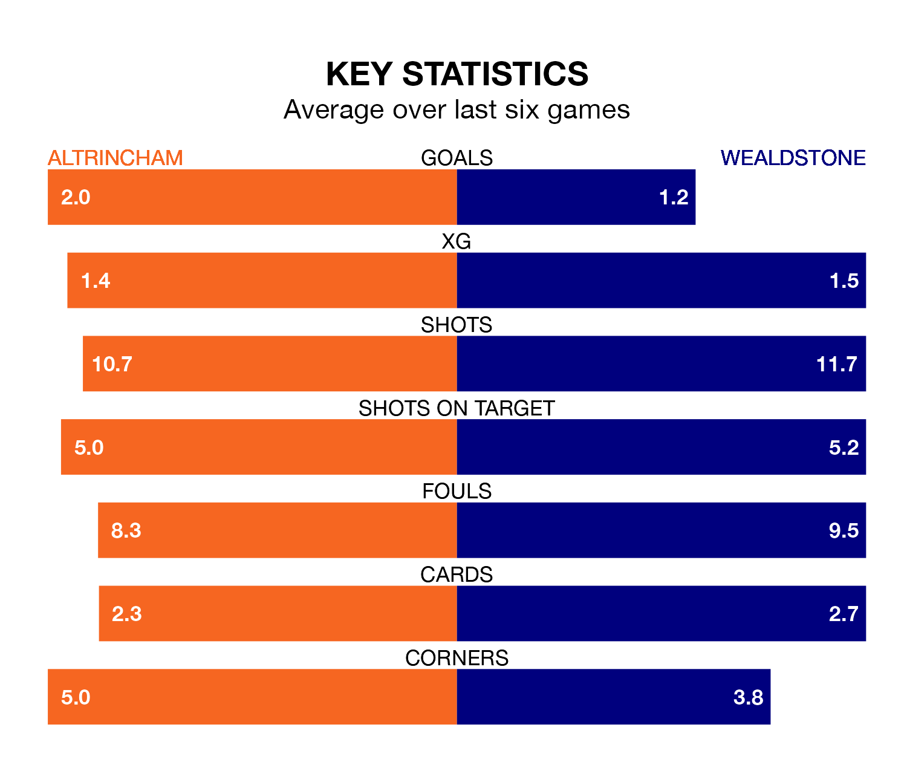

Altrincham host Wealdstone on Tuesday at the J. Davidson Stadium in the National League.
In their last league match, on Saturday, Altrincham lost to Gateshead 3-2 at home, with their goal scored by Alex Newby.
Wealdstone drew, 1-1 at home against Kidderminster Harriers, with Max Kretzschmar scoring their goals.
With 73 goals in 40 games so far this season, Altrincham are scoring more than average in the league with 1.8 goals per game. And they are conceding fewer than average, letting in 57 goals at a rate of 1.4 per game.
Wealdstone, meanwhile, are below average scorers, with 1.4 goals per game, compared to a league average of 1.5. They have conceded 1.5 goals per game.
In the last 10 years, Altrincham and Wealdstone have played each other on seven occasions. Altrincham won two of them, Wealdstone four, and they drew once.
On average, Robins scored 0.9 goals and Wealdstone 1.3 in those matches.
Their last meeting was on September 16, when they played out a 0-0 draw.
Robins are ninth in the table after 40 games, of which they have won 17 and drawn 10, earning 61 points.
The visitors are seven places behind the home side in 16th, with 12 wins and 11 draws putting them on 47 points.
Altrincham are in mixed form in the National League, with three wins and three losses from their last six games.
With two wins and two draws over that period, Wealdstone's form is slightly worse – they have taken eight points from 18, compared to Altrincham's nine.
Updated: 12:16 (UTC), 25/03/24